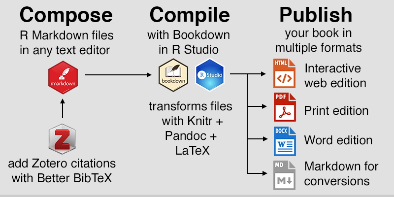

1 What Is Bookdown?
Overview
The bookdown package is an open-source R package that facilitates writing books and long-form articles/reports with R Markdown. (https://bookdown.org/)
The bookdown package is built on top of R Markdown (http://rmarkdown.rstudio.com), and inherits the simplicity of the Markdown syntax (see guide), as well as the possibility of multiple types of output formats (PDF/HTML/Word/…). It has also added features like multi-page HTML output, numbering and cross-referencing figures/tables/sections/equations, inserting parts/appendices, and imported the GitBook style (https://www.gitbook.com) to create elegant and appealing HTML book pages. This book itself is an example of how you can produce a book from a series of R Markdown documents, and both the printed version and the online version can look professional. You can find more examples at https://bookdown.org.
From bookdown: Authoring Books and Technical Documents with R Markdown by Yihui Xie
Process
 Figure 9.1: Simplified workflow to compose, compile, and publish in multiple formats with Bookdown. Images from Daniel Hendricks, RStudio, and Zotero.
From Bookdown, GitHub, and Zotero by Jack Dougherty and Ilya Ilyankou
- Book set-up: We set up the Bookdown files and composed the manuscript in R Markdown, the R-flavored version of the easy-to-write Markdown syntax. Each chapter consisted of one .Rmd file, with links to static images and interactive visualizations.
- Adding content:
- We upload our files to a free GitHub repository, which allows multiple authors to work simultaneously on different chapters of the book and “push” revisions (called commits) to a shared online repository, where authors can view each other’s edits.
- Many on our online team use Atom to add content.
- Many of our instructors / SMEs (Subject Matter Experts) use Word documents or Google docs for content.
For Google docs, you can use the Docs to Markdown add-on to convert one-time into Markdown format, which is similar to R Markdown. For Word docs, we use the Writage plugin to convert to markdown.
- Building the book: After adding content (through Github or Atom), we used Bookdown to automatically “knit” and compile the book products. Behind the scenes, Bookdown builds the editions using the PanDoc universal document converter and the LaTeX document preparation software, without requiring you to learn these complex formats.
- Commit to Create! Lastly, we commit the changes through GitHub Desktop, and voila! Your book is created!
Modified from Bookdown, GitHub, and Zotero by Jack Dougherty and Ilya Ilyankou